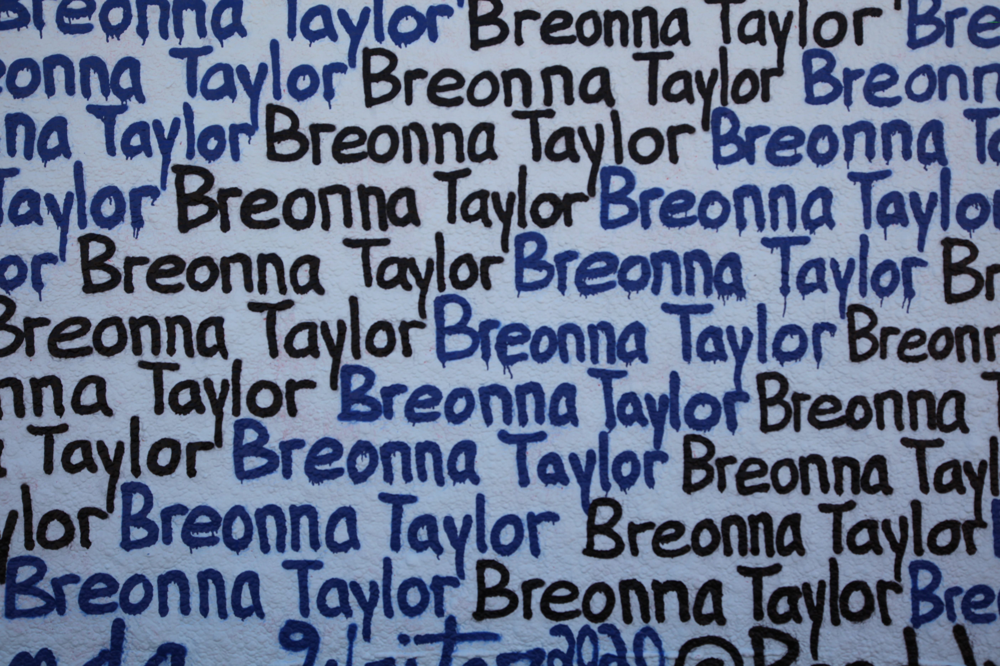

hiphop
라임
플로우
비트
라임

라임이란
같은듯 다른듯 반복되는
운율
에 가깝다카츠지 료는 2015년
드라마에서 만나 친구로 지내다 교제 4개월 만인 2018년 7월 결혼했다.
이후 8개월 만에
아들
을 득남했다. 이들의 지인은 “지난해 봄부터 두 사람이 별거해왔다”면서 “마에다 아츠코가 출산 이우 육아 스트레스로 힘들어했다. 부모에게 도움을 받기 위해 친정살이를 했고 카츠지 료가 집을 떠나 다른 아파트에서 생활했다”고 전했다.